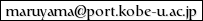

Yuzo Maruyama（丸山 祐造）

Professor
Kobe University
,
Graduate School of Business Administration
Curriculum Vitae
Research (updated: 22 July, 2023)
Recent papers on arXiv
Grants-in-Aid for Scientific Research (KAKEN)
postdoc
Aurélie Boisbunon
(March 2013 -- September 2013)